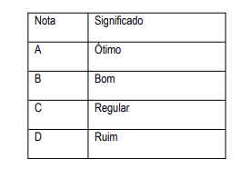
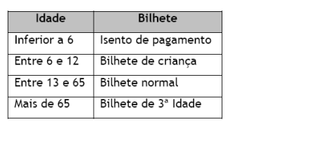

Lista de Exercícios sobre Estruturas de Repetição
Download da resposta dos Exercícios compactada em um arquivo .zip
Escrever um algoritmo que mostre o cardápio para o usuário e permita que o usuário informe o código do item pedido, a quantidade e calcule o valor a ser pago por aquele lanche. Mostre na tela o item pedido e o valor a ser pago.
- a maior altura da turma;
- a média de altura das mulheres;
- a média de altura da turma
6. Um cinema possui capacidade de 20 lugares e está sempre com ocupação total. Certo dia, cada espectador respondeu a um questionário, no qual constava: - sua idade; -sua opinião em relação ao filme, segundo as seguintes notas:
- a quantidade de respostas ótimo;
- a média de idade das pessoas que responderam ruim;
- a diferença de idade entre a pessoa de maior idade com a pessoa de menor de idade que responderam o questionário.

- Calcule o total a pagar ( total a pagar é o valor da diária multiplicado pelo numero de dias hospedados)
- Escreva a conta final contendo: o nome do hóspede, o tipo do apartamento, valor total das diárias.
- Para cadastrar os dados de novo hóspede pergunte Deseja continuar S/N.
8. Escreva um programa para determinar o tipo de bilhete que cada visitante de um parque de diversão deve comprar. O tipo de bilhete é determinado em função da idade do visitante, de acordo com a tabela abaixo. O programa deverá solicitar a leitura de um novo bilhete. A execução do programa deverá encerrar quando o usuário informa “não”. Mostre no final a quantidade de bilhetes infantis e adultos vendidos.
| Classe | Alíquota |
|---|---|
| A | Isento |
| B | 5% |
| C | 10% |
| D | 15% |
| E | 20% |